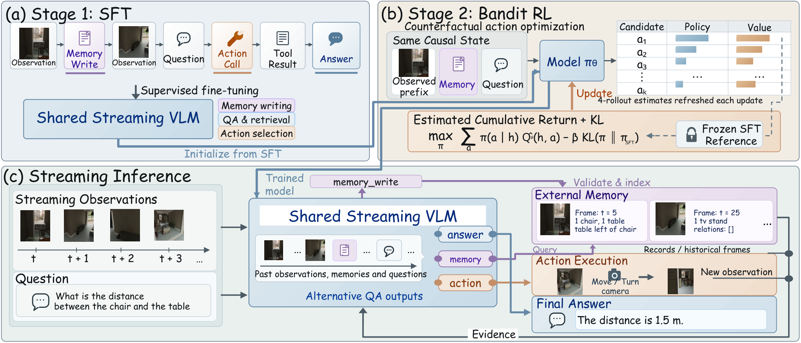

Paper Analysis
01 · Three Different Sources of Missing Evidence
空间问题可能已能由当前视图回答，也可能依赖此前看过但已离开上下文的内容，还可能需要尚未获得的视角。只增加上下文长度只能处理第二种情况，不能自动产生第三种证据。MemAct 把当前理解、历史回忆和主动观察放进同一因果交互协议。
输入包括按时间到达的 RGB、时间戳、问题与已经返回的工具结果。推理不向模型提供真值深度、三维重建地图、私有实例 ID 或未来观测。输出可以是最终选项/数值，也可以是检索请求或相机动作。
这里的 memory 有两层：模型的有限上下文/KV，以及外部持久记录和历史图像。旧视觉 token 被移出上下文后，外部内容仍可检索。因此“流式”指因果处理，不表示外部总存储固定；它也不是每帧输出深度的重建网络。
Paper Analysis
02 · What the Original Pipeline Actually Stores

Yuxi Wei, Wei Huang, Qirui Chen, Lu Hou, and Xiaojuan Qi · Original figure, unmodified · arXiv non-exclusive distribution license; limited reproduction for scholarly commentary, not a CC license · Paper & Caption ↗
先看图 3 下半部分。模型以 1 FPS 接收观察，每五秒生成一个增量 memory_write。窗口内每一帧仍有自己的记录：帧引用、可见类别及数量，另有可选的图像平面关系。不是把五秒内所有对象累加成一个无时间信息的句子。
外部 router 检查格式、连续时间窗口和帧引用，但不纠正模型的语义预测。重复的相同写入不会重复入库，同窗口冲突内容会被拒绝。模型若漏认对象，合法 JSON 仍可能保存错误内容；结构可靠与语义正确是不同要求。
问题到来后，共享 VLM 输出 answer、use_memory 或 camera action。检索按类别和可选时间范围筛选，类别组合取匹配记录的并集，同时标记是否共同可见；文本每页最多八条，每次最多两张历史图像，每个问题最多四张不同历史图像、四次检索调用。
图像选择本身由规则决定：每段连续匹配区间取代表帧，优先共同可见和接近中点的时间，额外候选按类别计数排序。它不是一个学会三维对应的神经检索器。语义记录提供“去哪里找”的线索，真正的外观和空间细节仍由取回的图像补充。
每帧看到两个同类实例，不意味着三帧累计看见六个实例。训练标签的历史去重由离线实例 ID 计算，但 ID 不暴露给模型。只存类别计数无法普遍解决跨帧身份，保留帧引用正是为了留下进一步判断的依据。
Paper Analysis
03 · Retrieving the Past Versus Acquiring a New View
相机动作只有五种：向前、向左、向右平移 0.5 m，以及左右旋转 45°。平移保持朝向，旋转保持位置；每次基于上一步状态执行并返回真实渲染的新观察，一个问题最多尝试三次。当前实验的 Action QA 只来自模拟环境。
检索取回以前已经获得的证据，动作改变能看到的信息。模型可以交替使用结果继续判断，也可以直接结束回答。动作获得的视图留在该问题上下文中，不自动执行常规 memory_write；问题结束后恢复原视频流。
教学例子：较早帧中目标完整出现，当前视图已移开，此时应尝试检索；若整个历史中目标都很小或被裁剪，仅重复取回相似画面可能无用，应考虑改变视角。论文训练让模型接触这两类情况，但并未保证每个问答样本都能被可靠地归类。
数据构造尤其区分画面占比、裁剪完整度和遮挡比例。投影框很大不代表可见表面很多；物体完全在画面内也可能被另一个物体挡住。用于动作奖励的是 mask 像素占比和 framing，而非简单用类别被检测到作为充分证据。
Paper Analysis
04 · Supervision and Gradient Paths
基础模型是 Qwen3.5-4B/9B。论文附录 D.1 给出 Query、Value 投影上的 LoRA：rank=8、scaling=16、dropout=0，基础权重及视觉编码器冻结。SFT 使用 MemAct-data 与 VSI-590K，只对 assistant 产生的记录、检索请求、相机命令和答案计算 next-token 交叉熵；输入图像、提示、工具结果仅作为条件。
训练集的 100 万指 QA answer turns，不是包含所有 memory_write 在内的总事件数。其 Current/Memory/Action 分别为 302661/402662/294677，额外附有记忆和交互监督。测试按场景划分，主集 20000 个 QA turns，Timing 另有 2000 个问题。动作监督完全来自 3D-FRONT 模拟。
SFT 梯度学习“什么条件下生成什么记录或调用”。外部数据库查找、JSON 执行和相机渲染并不是可微模块，答案 loss 不会通过离散检索结果直接反向修改早先保存的记录。这里不能套用连续 KV 展开训练中“未来几何 loss 回传过去写入”的说法。
第二阶段在同一因果历史 h 和剩余预算下，分别评估五个相机动作及 answer_now。每个候选运行四次后续续演，使用更新前冻结的策略快照，估计累计回报 Q_hat。更新策略时 Q_hat detach，梯度只经过候选决策概率和 KL 项；训练中还以 0.25/0.25 比例回放 QA 与 memory SFT，action 项概率为 0.50。
这是用将来结果评价当前决策，而不是把未观察图像塞进决策输入。分支图像只有执行对应动作后才进入各自上下文，真实几何与奖励分数只用于离线监督或训练评价。
L_SFT = mean cross-entropy over assistant output tokens
Q_hat(h,a) = (1/4) sum_b G_b(h,a)
L_action = E_h[-sum_a pi_theta(a|h) stopgrad(Q_hat(h,a))
+ 0.05 KL(pi_theta || pi_SFT)]
Base VLM frozen; LoRA parameters updated.Paper Analysis
05 · Why the Reward Uses the Best Historical Evidence
对目标 o，像素可见比例 p_o 除以 0.10 后截断到 1，再乘图像裁剪完整度 f_o，得到 s_o。涉及两个目标的问题取 min(s_1,s_2)，避免只把其中一个拍得很大就获得高分。该分数是与任务有关的可见性代理，不是几何推理正确率。
Φ(h,q) 是截至当前所有可用观察中最好的 joint evidence。动作收益只奖励超过此前最佳值的增加，重复回到已经看过的好视角不会反复获奖。具体即时奖励为 0.10ΔΦ−0.03，非法动作再罚 0.20，折扣 γ=1；最终答案的正确率/MRA 另外计入回报。
教学算例：历史最佳证据为 0.4，第一步仍为 0.4，第二步升到 0.8。两步证据奖励合计 0.04，动作成本合计 0.06，最终还要看答案得分。第一步即使没有即时可见性收益，也可能因它使第二步和正确回答成为可能而得到较高累计价值。
这个设计并不一味鼓励移动：同样答案和最终证据下，短路径更优；已经足够回答时 answer_now 没有动作成本。累计证据收益会望远镜求和为 0.10(Φ_final−Φ_initial)，重复观察不能持续刷分。
限制也很明确：更大、更完整的目标视图不一定提供准确尺度或三维距离。该奖励适合本文构造的目标测量任务，不能不加修改就作为重建 memory 的保留价值。
s_o(x) = min(p_o(x)/0.10, 1) f_o(x)
E(x,q) = min_o s_o(x)
Phi(h,q) = max_{x in observed history} E(x,q)
r_k = 0.10 [Phi(h_next,q) − Phi(h,q)] − 0.03
− 0.20 * invalid_action
G = sum_k r_k + R_QAPaper Analysis
06 · Memory Ablations Are More Informative Than the Headline
选择题使用 ACC，数值题使用 MRA：对相对误差是否低于 5%、10%……50% 十个阈值取平均，零真值要求精确为零。主表 Overall ACC 汇总 13134 个选择题，MRA 汇总 6866 个数值题，按实际题数加权，不能把它们当成同一指标或简单平均三类分数。
MemAct-9B 的 Overall ACC/MRA 为 67.27/60.23，StreamingVLM 为 61.39/48.65。所有 streaming 对照也在作者 QA 数据上微调，而离线模型每次最多得到因果前缀中均匀采样的 32 帧。输入表示和训练条件不同，主表差距不是单独某个 memory 模块的贡献。
更直接的是 Memory QA 消融。无显式记忆到完整记忆分别增加 13.59 ACC 和 15.48 MRA；去掉历史图像损失 3.19/4.00 点，去掉关系只有 0.20/0.00 点。类别、数量与帧引用有用，但不能把所有收益解释成丰富关系结构带来的提升。
GT memory 进一步达到 70.77/71.06，说明预测记录质量仍有限。保存历史从 10 秒延长到全部历史时持续改善，却同时扩大了可访问内容。写入更频繁并非总更好：3 秒 ACC=68.13，5 秒=68.11，MRA 同为 67.72；这 0.02 点差异不能证明更频繁一定值得。
附录说明 memory 组件消融会按各配置重新训练。因此它比较的是完整训练配置，不能解释为单次推理时删除某字段的纯即时因果效应。
| Memory Configuration | ACC (%) ↑ | MRA (%) ↑ |
|---|---|---|
| No explicit memory | 54.52 | 52.24 |
| Full memory | 68.11 | 67.72 |
| Without historical frames | 64.92 | 63.72 |
| Without counts | 68.10 | 66.62 |
| Without relations | 67.91 | 67.72 |
| Ground-truth records | 70.77 | 71.06 |
Paper Analysis
07 · Action Gains, Timing, and Released Runtime
Action QA 中，不允许动作时 ACC/MRA 为 47.45/35.27，SFT 为 52.92/41.87，加入 bandit 为 58.28/48.74；平均尝试次数从 SFT 的 2.19 降至 2.02。GRPO 为 57.92/48.20，与 bandit 接近，所以数据支持累计动作优化有用，但不足以说明 bandit 全面优于其他优化方式。
完整奖励相对“只比当前视图增益”的 joint 配置，ACC 从 55.81 到 58.28，有效增益率从 58.07% 到 71.14%。有效增益指历史最优 joint score 提升超过 0.10，不是三维重建成功率；所有问题包括零动作回答都进入统计。
Timing 的 T/JA/JM 为 85.3/57.4/50.9，但这一单独评测禁用记忆与动作工具。它测试何时回答，不能据此声称整个检索和运动链路实时。0.420 s/QA 的主表延迟也排除了观察维护、记忆操作、动作执行/渲染、采集和网络等待。
官方代码仓库的 implementation scope 明确说明：当前原生 callback 会在调用之间重新计算保留上下文，只在单次调用内部使用 KV cache，没有实现跨调用持久 compact-KV eviction，因此不能复现论文所报 streaming latency。模型权重不包含在发布中，数据上传仍在进行。本次检查了官方发布说明，未运行训练或复现实验。
外部基准并非全部获胜，例如 VSI-Bench 为 65.90，低于表中的 Cambrian-S-7B 67.50。离散相机动作、模拟环境、有限模板以及可见性奖励的适用范围，应与主表改善一起阅读。
Paper Analysis
08 · Implications for Semantic Memory Formation
最有价值的启发是区分语义索引和视觉证据。语义可以指示某段历史含什么、何时发生以及应去哪里找，但重建所需的局部对应、深度、遮挡和实例差别通常不能由类别记录替代。写入前融合时应保留原视觉/几何通路，并测试压缩后这些证据是否仍可用于未来几何。
与 SPARE 的共同点是按问题选择历史，差别在于 MemAct 还能主动获取新视图；与 Velox 的差别是读取单元从几何对齐的 KV block 变成语义记录及原图。它们都不直接验证“语义进入 LingBot-Map memory 后，固定容量下几何变好”。
可提出的后续实验是：固定总状态预算和输入序列，比较仅视觉状态、语义辅助写入、以及只在输出端加语义。将当前帧与依赖较旧历史的帧分开报告几何误差，并同时看语义解码能力。MemAct 的意义在于提醒我们检查保留下来的证据，而不是用 VLM 问答成绩替代这项重建实验。
Discussion
Reading Questions
Are semantic records a complete scene graph?
不是。它们记录已观察帧的类别、数量及可选图像平面关系，不含完整三维场景和可见性之外的事实。
Does the reward backpropagate through the environment?
不会。候选续演得到的回报在更新时 detach，优化的是 LoRA 所控制的决策概率；环境与外部记录操作不是可微图。
Why retain historical images as well as records?
语义摘要丢失外观和细节。去掉图像后 Memory QA 的 ACC/MRA 都下降，历史实例和空间判断仍需要视觉证据。
Does the public code reproduce the reported latency?
官方 README 明确说当前发布没有跨调用持久 compact KV，不能复现论文的流式延迟。它提供了协议和训练等入口，但不能视为完整性能复现。
References
- Original Paper and Appendices ↗
- Official Project ↗
- Official Repository and Runtime Scope ↗
- Related Note: SPARE ↗
- Related Note: Velox ↗
One original method figure is reproduced for focused scholarly commentary. Results are author-reported, not locally reproduced. First-submission dates and reading versions are recorded separately.
Verified on 2026-11-02. Paper results refer to the linked versions. Repository references were checked on this date.